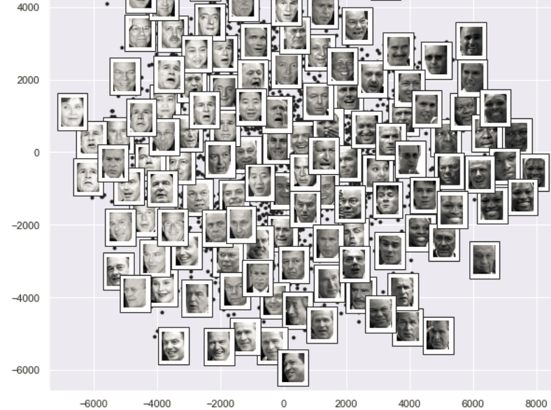

Capaian Pembelajaran Mata Kuliah:
- Mahasiswa mampu menemukan persamaan karakteristik.
- Mahasiswa mampu menghitung nilai eigen dari persamaan karakteristik.
- Mahasiswa mampu menghitung eigenvector yang membentuk matriks.
Pengantar Nilai Eigen dan Vektor Eigen
Image Compression Algorithms
Vektor eigen adalah sumbu, nilai eigen adalah jarak sepanjang sumbu tersebut. Vektor eigen adalah dasar teknik reduksi dimensi seperti PCA (analisis komponen utama). Contoh: mencari gambar serupa dalam kumpulan besar dan memperlihatkan hubungannya dalam 2D.

Sumber: https://bit.ly/3tE64G3
Sumber: https://bit.ly/3rXLO1A
Konstruksi Jembatan
Aplikasi nilai eigen adalah magnitudo terkecil dari suatu sistem pembangunan yang memodelkan jembatan yang merupakan frekuensi natural jembatan. Insinyur menggunakan ini untuk menjamin stabilitas struktur.
A. Nilai Eigen dan EigenVektor
Nilai eigen adalah kumpulan skalar khusus yang terkait dengan sistem persamaan linier. Vektor eigen untuk matriks persegi didefinisikan sebagai nilai vektor bukan nol yang bila dikalikan dengan matriks persegi akan menghasilkan kelipatan skala dari vektor tersebut:
\[Ax = \lambda x\]
- A adalah matriks persegi yang diberikan.
- x adalah vektor eigen dari matriks A.
- \(\lambda\) adalah kelipatan skalar apa pun.
↗ x
(a) \(0 \le \lambda \le 1\)
↗↗ \(\lambda x\)
(b) \(\lambda > 1\)
↙ \(\lambda x\)
(c) \(-1 \le \lambda\)
↙↙ \(\lambda x\)
(d) \(\lambda \le -1\)
\[Ax = \lambda Ix\]
\[(\lambda I - A)x = 0\]
\(det (\lambda I - A) = 0\) yang akan menghasilkan persamaan fungsi polinomial.
B. Persamaan Vektor Eigen
\(x = \begin{bmatrix} x_1 \\ x_2 \\ \dots \\ x_n \end{bmatrix}\) dengan \(Ax = \lambda Ix\); \(x\) adalah vektor eigen.
Langkah langkah menghitung vektor eigen:
- Tentukan nilai eigen matriks \(A\) menggunakan persamaan \(det (\lambda I - A) = 0\).
- Nilai yang diperoleh diberi nama \(\lambda_1, \lambda_2, \lambda_3 \dots\).
- Temukan vektor eigen (\(x\)) untuk \(\lambda_1\) menggunakan persamaan \((\lambda I - A) = 0\).
- Ulangi langkah 3 untuk nilai eigen lainnya.
Contoh 1
Diketahui matriks \(A = \begin{pmatrix} 1 & -2 \\ 1 & 4 \end{pmatrix}\). Hitunglah nilai eigen \(\lambda\).
\(\lambda \begin{pmatrix} 1 & 0 \\ 0 & 1 \end{pmatrix} - \begin{pmatrix} 1 & -2 \\ 1 & 4 \end{pmatrix} = 0 \rightarrow \begin{pmatrix} \lambda - 1 & 2 \\ -1 & \lambda - 4 \end{pmatrix} = 0\)
\[((\lambda - 1)(\lambda - 4) - (2)(-1)) = 0 \rightarrow \lambda^2 - 5\lambda + 6 = 0\]
\[(\lambda - 2)(\lambda - 3) = 0 \Rightarrow \mathbf{\lambda = 2} \text{ atau } \mathbf{\lambda = 3} \text{} \]
Untuk \(\lambda = 2\):
\(\begin{pmatrix} 2 - 1 & 2 \\ -1 & 2 - 4 \end{pmatrix} \begin{pmatrix} v_1 \\ v_2 \end{pmatrix} = 0 \rightarrow \begin{pmatrix} 1 & 2 \\ -1 & -2 \end{pmatrix} \begin{pmatrix} v_1 \\ v_2 \end{pmatrix} = 0\)
\(v_1 + 2v_2 = 0\) dan \(-v_1 - 2v_2 = 0\), Maka, \(v_1 = -1\) dan \(v_2 = 1\).
Pembuktian (\(Ax = \lambda x\)):
\(\begin{pmatrix} 1 & -2 \\ 1 & 4 \end{pmatrix} \begin{pmatrix} 1 \\ -1 \end{pmatrix} = 3 \begin{pmatrix} 1 \\ -1 \end{pmatrix} \rightarrow \begin{pmatrix} 3 \\ -3 \end{pmatrix} = 3 \begin{pmatrix} 1 \\ -1 \end{pmatrix}\)
2. Diketahui matriks \( A = \begin{bmatrix} 4 & 0 & 1 \\ -2 & 1 & 0 \\ -2 & 0 & 1 \end{bmatrix} \), Hitunglah: (a) Persamaan polinomial, (b) Nilai eigen, (c) Eigen vektor.
a. Menemukan persamaan polinomial
\(\det \left( \lambda I - A \right) = \begin{vmatrix} \lambda - 4 & 0 & -1 \\ 2 & \lambda - 1 & 0 \\ 2 & 0 & \lambda - 1 \end{vmatrix} = 0\)
\( ((\lambda - 1)(\lambda - 1)(\lambda - 4) + 0 + 0) - (-1 \cdot 2 \cdot (\lambda - 1) + 0 + 0) = 0 \)
\(\lambda^3 - 6\lambda^2 + 11\lambda - 6 = 0\)
b. Mencari nilai eigen
\(\lambda^3 - 6\lambda^2 + 11\lambda - 6 = 0 \rightarrow (\lambda - 1)(\lambda - 2)(\lambda - 3) = 0\)
\(\mathbf{\lambda = 1, \lambda = 2, \lambda = 3}\)
c. Mencari vektor ciri (eigen vektor)
Untuk \(\lambda = 1\):
\(\begin{bmatrix} -3 & 0 & -1 \\ 2 & 0 & 0 \\ 2 & 0 & 0 \end{bmatrix} \begin{bmatrix} x_1 \\ x_2 \\ x_3 \end{bmatrix} = 0 \rightarrow \dots \rightarrow x = s \begin{bmatrix} 0 \\ 1 \\ 0 \end{bmatrix}\)
Untuk \(\lambda = 2\):
\(\begin{bmatrix} -2 & 0 & -1 \\ 2 & 1 & 0 \\ 2 & 0 & 1 \end{bmatrix} \begin{bmatrix} x_1 \\ x_2 \\ x_3 \end{bmatrix} = 0 \rightarrow \begin{bmatrix} 1 & 0 & 1/2 \\ 0 & 1 & -1 \\ 0 & 0 & 0 \end{bmatrix} \rightarrow x = s \begin{bmatrix} 1/2 \\ 1 \\ 1 \end{bmatrix}\)
Untuk \(\lambda = 3\):
\(\begin{bmatrix} -1 & 0 & -1 \\ 2 & 2 & 0 \\ 2 & 0 & 2 \end{bmatrix} \rightarrow \dots \rightarrow \begin{bmatrix} 1 & 0 & 1 \\ 0 & 1 & -1 \\ 0 & 0 & 0 \end{bmatrix} \rightarrow x = s \begin{bmatrix} -1 \\ 1 \\ 1 \end{bmatrix}\)
Vektor-vektor ciri untuk matriks A adalah:
\(\begin{bmatrix} 0 \\ 1 \\ 0 \end{bmatrix} \text{ untuk } \lambda = 1, \enspace \begin{bmatrix} 1/2 \\ 1 \\ 1 \end{bmatrix} \text{ untuk } \lambda = 2, \enspace \begin{bmatrix} -1 \\ 1 \\ 1 \end{bmatrix} \text{ untuk } \lambda = 3\)
3. Diberikan \( A = \begin{pmatrix} 2 & -3 & 1 \\ 3 & 1 & 3 \\ -5 & 2 & -4 \end{pmatrix} \), Tentukan persamaan polinomial dari A.
\( S_1 = 2 + 1 - 4 = -1 \)
\( S_2 = \begin{vmatrix} 1 & 3 \\ 2 & -4 \end{vmatrix} + \begin{vmatrix} 2 & 1 \\ -5 & -4 \end{vmatrix} + \begin{vmatrix} 2 & -3 \\ 3 & 1 \end{vmatrix} = -10 + (-3) + 11 = -2 \)
\( S_3 = \text{det}(A) = 2(-10) + 3(3) + 1(11) = 0 \)
Persamaan karakteristiknya: \(\lambda^3 + \lambda^2 - 2\lambda = 0\)